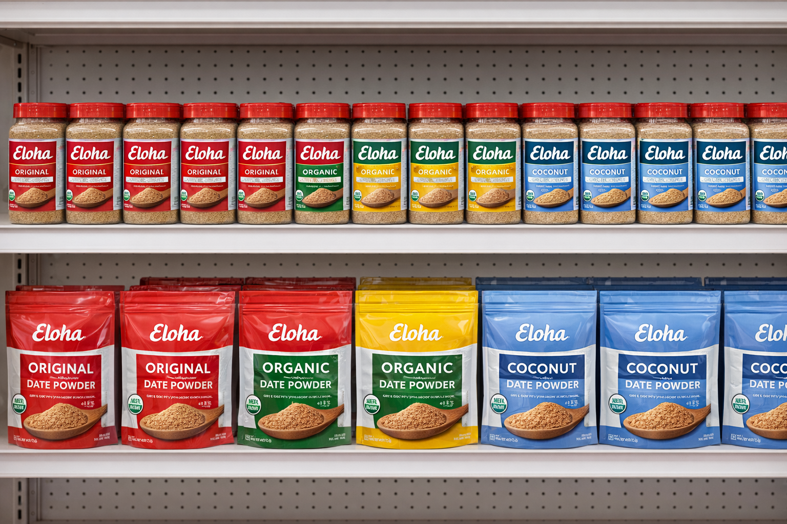

Store Onboarding
Rapid onboarding across 83 retail locations in 7 months.

Eloha entered modern retail needing launch speed, operational discipline, and a system that could establish credibility from day one.

Eloha needed to launch successfully and build market presence quickly. As a new brand entering modern retail, they required structured execution and disciplined operations to establish credibility and drive revenue from day one.
DALA accelerated store onboarding, ensured stronger shelf presence, supported launch campaigns, and kept performance visible through weekly tracking so the brand could scale with more control.
Rapid onboarding across 83 retail locations in 7 months.
Ensured consistent brand presence and visibility.
Launched with targeted introductory campaigns.
Weekly growth tracking and performance insights.
Revenue started building from launch through disciplined market entry and execution.
Scaled into meaningful retail presence in less than a year.
A fast launch curve that translated quickly into shelf presence and commercial traction.
Eloha experienced consistent and strong revenue growth following its mid-year launch. The partnership successfully launched the brand and scaled it to significant market presence within just seven months, building a stable and growing income stream.
DALA helps new and growing brands enter modern retail with the kind of structure that protects credibility and speeds up execution.